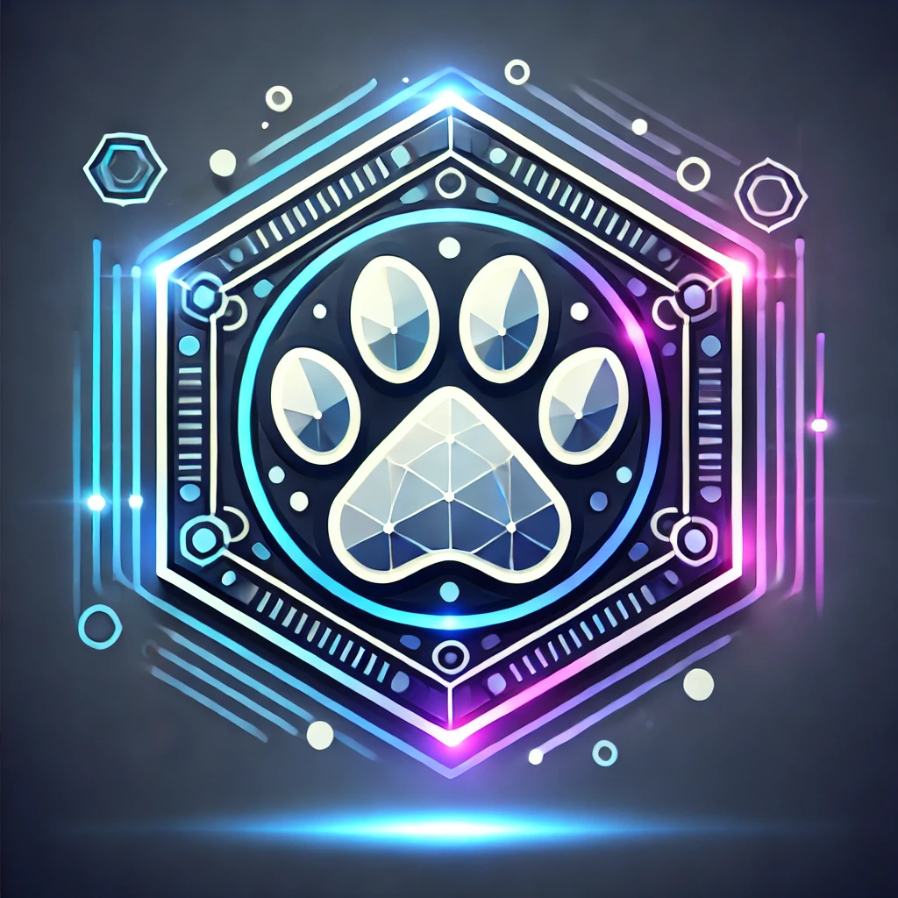

What is CrowdPup?

A meme token designed to empower anyone to create decentralized crowdfunding campaigns through blockchain.CrowdPup is an innovative meme token designed to empower individuals and communities by providing a platform to create and manage decentralized crowdfunding campaigns. Built on blockchain technology, CrowdPup ensures transparency, security, and efficiency, allowing anyone to raise funds for projects with ease. Whether you're launching a new idea or supporting a cause, CrowdPup revolutionizes crowdfunding by leveraging the power of the blockchain to bring together contributors from around the world. With its user-friendly interface, CrowdPup makes crowdfunding simple, decentralized, and secure. .
Our Mission
Democratizing crowdfunding with transparency, security, and community empowerment through blockchain technology.The mission of CrowdPup is to democratize crowdfunding by enabling anyone, anywhere, to create and participate in decentralized campaigns. We aim to break down traditional barriers by providing a secure, transparent, and efficient platform built on blockchain technology. Our goal is to empower individuals, startups, and communities to raise funds for their projects and causes without intermediaries. By harnessing the power of decentralized finance, CrowdPup fosters trust, innovation, and global collaboration, making it easier than ever to fund ideas that drive positive change. .
Roadmap

- Phase 1: Token launch and community building.
- Phase 2: Platform development and beta release.
- Phase 3: Ecosystem expansion with staking and advanced tools.
- Phase 4: Global adoption and strategic collaborations.
Tokenomics

Total Supply: 1,000,000,000 CROWDPUP
- 50% - Community & Marketing
- 20% - Development
- 15% - Liquidity Pools
- 10% - Staking Rewards
- 5% - Team